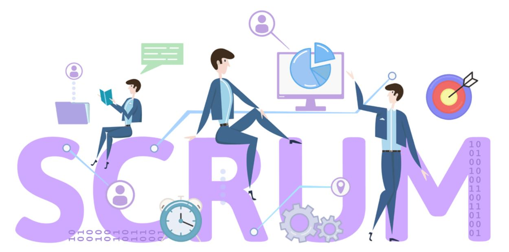
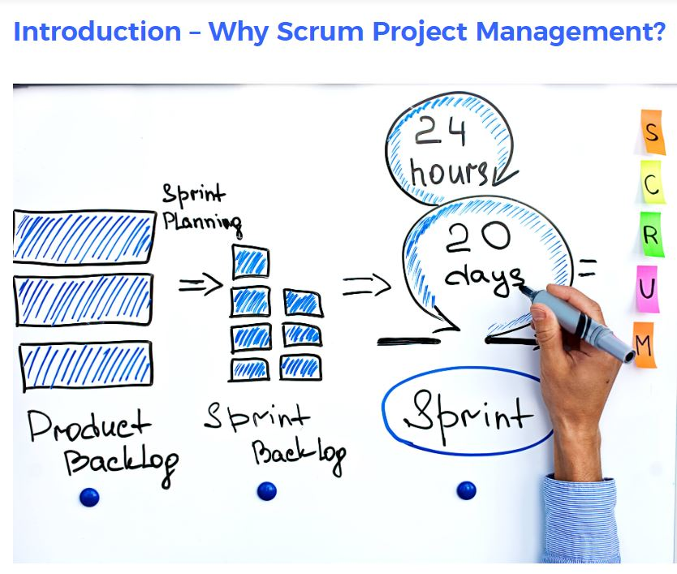
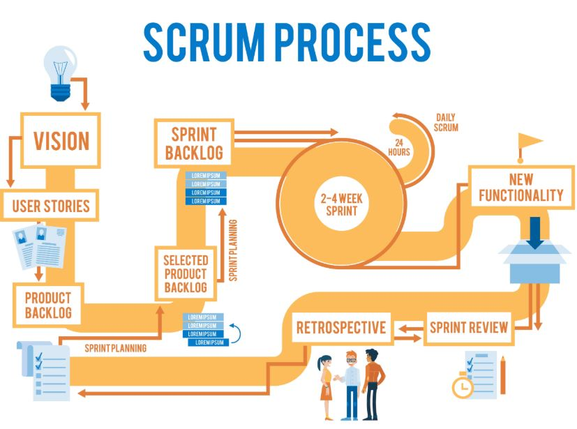
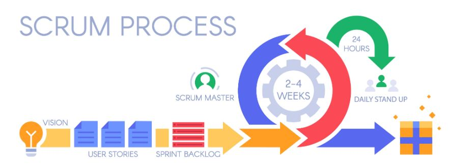
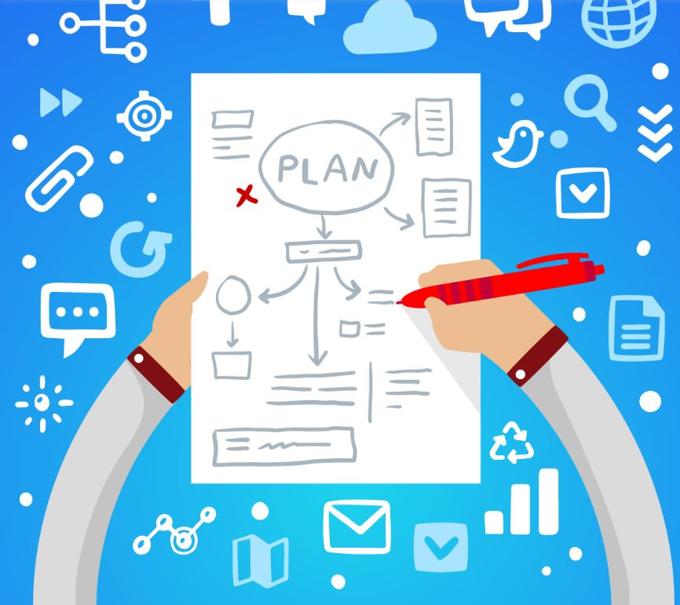

Implementacion Scrum
LOS 11 PASOS PARA IMPLEMENTAR METODOLOGÍA SCRUM
Para que puedas tener una visión más global de Scrum y su implantación, aquí encontrarás
un resumen original de Jeff Shuterland (Creador de SCRUM) de lo que necesitas para poner
en marcha un proyecto Scrum.
Es un descripción rápida de todo el proceso, pero te va a venir de maravilla para poder
empezar con el «cómo se hace en scrum».
Click en la imagen!
11 PASOS PARA IMPLEMENTAR METODOLOGÍA SCRUM.
1. Elige un responsable de producto.
Esta persona es la que tiene la visión clara de lo que se necesita, se va a hacer, fabricar o conseguir. tendrá en cuenta riesgos y compensaciones, qué es posible y qué es factible.
2. Elige un equipo.
¿Quién va a hacer el trabajo real? Este equipo necesita tener las habilidades necesarias para convertir en realidad la visión del responsable de producto. Los equipos tienen que ser pequeños: entre 3 y 9 personas es lo normal.
3. Elige un Scrum Master.
Es la persona que conducirá a todos los demás por el sistema de trabajo Scrum ayudando al equipo a eliminar todo aquello que les frene. Quitar desperdicios.
4. Elabora y prioriza una lista de objetivos o backlog.
4. El Backlog no es más que una lista de todo lo que debe hacerse para convertir la visión en realidad. Esta lista existe y evoluciona a lo largo del proceso, es el mapa o la hoja de ruta del producto.
En cualquier momento del proyecto, la lista de objetivos pendientes es la única y definitiva vista panorámica «de todo lo que el equipo podría hacer, por orden de prioridades». Existe una sola lista de objetivos pendientes. Esto quiere decir que el responsable de producto tiene que tomar decisiones sobre las prioridades del proceso.
Debería consultar con todos los interesados y con el equipo para asegurarse de que representan tanto lo que quiere el cliente como lo que es factible construir.
5. Haz una estimación afinada de la lista de objetivos pendientes.
Es crucial que las personas que realmente van a llevar a cabo los ítems enumerados en la lista, calculen el esfuerzo que les llevará cada uno. El equipo deberá ir ítem por ítem para decidir si realmente es factible hacerlo.
¿Hay información suficiente para llevar a cabo cada uno? ¿Es lo suficientemente pequeño para poder calcular? ¿Hay una definición de «hecho»? ¿Todo el mundo está de acuerdo en los requisitos que hay que cumplir para considerar que una cosa está «hecha»? ¿Ofrece un valor visible?
Cada ítem tiene que poder presentarse, tiene que estar listo para, idealmente, poder ser puesto en marcha. No hagas estimaciones de la lista de objetivos pendientes en horas, porque a las personas se nos da fatal calcular el tiempo. Haz estimaciones sobre el tamaño: pequeño, mediano o grande. O incluso mejor: utilizae la sucesión de Fibonacci y calcule el punto de valor de cada una de las entradas de la lista: 1, 2, 3, 5, 8,13, 21, etc. Lo que se conoce como el Póker de Planificación.
6. Planificación de sprints.
Ésta es la primera reunión Scrum. El equipo, el Scrum Master y el responsable de producto se sientan a planificar el sprint.
Los sprints siempre duran una cantidad determinada de tiempo, que es menos de un mes. Habitualmente, casi todo el mundo hace sprints de una o dos semanas. El equipo mira el principio de la lista de objetivos pendientes y hace una previsión de cuánto pueden tener terminado en este sprint. Si el equipo ya ha hecho algún sprint, deberían tener en cuenta los puntos que hicieron en el último. Ese número se conoce como la velocidad del equipo. El Scrum Master y el equipo deberían estar siempre intentando aumentar esa cifra en cada sprint. También es el momento para que el equipo y el responsable de producto se aseguren de que todo el mundo entiende exactamente cómo estos ítems van a lograr crear la visión. Además, en esta reunión todos deben ponerse de acuerdo en la meta, lo que todos quieren lograr en ese sprint.
Uno de los pilares del Scrum es que una vez que el equipo se ha comprometido con lo que creen que pueden terminar en un sprint, no hay vuelta atrás. No se puede cambiar y no se le puede añadir nada. El equipo tiene que ser capaz de trabajar de forma autónoma durante todo el sprint, para terminar lo que previeron que podían hacer.
7. Haz que el trabajo sea visible.
La forma más habitual de hacer esto es con una pizarra de Scrum y sus tres columnas: Pendiente, En proceso, Hecho. Los post-it representan los ítems que hay que completar y el equipo los cambia de sitio en la pizarra, a medida que se van terminando, uno por uno.
Otra forma de hacer que el trabajo sea visible es crear un diagrama burn down o de trabajo pendiente. En uno de los ejes está el número de puntos que el equipo ha llevado al sprint y en el otro el número de días. Cada día el Scrum Master registra el número de puntos que se han completado y los anota en el diagrama de trabajo pendiente. Lo ideal sería que hubiera una curva descendente que llegara a cero puntos en el último día del sprint.
8 Scrum Diario. Reunión Diaria de pie.
Éste es el pulso vital del Scrum. Cada día a la misma hora, durante no más de quince minutos, el equipo y el Scrum Master se ven y responden a tres preguntas: ¿Qué hiciste ayer para ayudar al equipo a terminar el sprint? ¿Qué vas a hacer mañana para ayudar al equipo a terminar el sprint? ¿Qué obstáculos se interponen en tu camino o el del equipo? Ya está. En eso consiste la reunión. Si dura más de quince minutos usted está haciendo algo mal. Esto ayuda al equipo a saber exactamente en qué punto está cada ítem del sprint. ¿Se van a terminar todas las tareas a tiempo? ¿Existe la posibilidad de ayudar a otros miembros del equipo a superar obstáculos? Las tareas no se asignan desde arriba, el equipo es autónomo; son ellos los que deciden. No hay que despachar detalladamente con los directivos. El Scrum Master es el responsable de eliminar los obstáculos que impiden que el equipo avance.
9 Revisión o demostración del sprint.
Ésta es la reunión en la que el equipo muestra lo que ha construido durante el sprint. Puede estar presente cualquiera, no sólo el responsable de producto, el Scrum Master y el equipo, sino los directivos de la empresa, los jefes, los clientes, todo el que quiera. Es una reunión abierta en la que el equipo explica lo que han podido pasar a la columna de «hecho» durante el sprint. El equipo debería mostrar únicamente lo que se ajuste perfectamente a la definición de «hecho». Aquello que esté completamente terminado y que se puede entregar porque no necesita más trabajo. Puede no ser un producto terminado, pero debería ser una característica del mismo, que está lista para empezar a funcionar.
10 Retrospectiva del sprint.
Después de que un equipo haya mostrado lo que ha conseguido durante el último sprint se sientan a reflexionar sobre lo que ha ido bien, lo que podría hacerse mejor y lo que se podría perfeccionar en el siguiente sprint. ¿Qué mejora puede incorporar el equipo al proceso de forma inmediata? No estamos buscando a quién echarle la culpa; estamos analizando el proceso. ¿Por qué eso fue así? ¿Por qué se nos escapó aquello? ¿Qué podría hacernos ser más rápidos? Es crucial que la gente asuma la responsabilidad de su proceso y resultados y trate de encontrar soluciones como equipo. A su vez, las personas tienen que tener la valentía de plantear los problemas con los que realmente se están encontrando de una forma constructiva. Para solucionar y no a acusar. El resto del equipo debe tener la madurez de escuchar esa opinión, tenerla en cuenta y buscar una solución, en lugar de ponerse a la defensiva. Al final de la reunión, el equipo y el Scrum Master deberían haberse puesto de acuerdo en una mejora del proceso que incorporarán en el siguiente sprint. Ese proceso de mejora, que se conoce también como kaizen, debería incluirse en la lista de objetivos pendientes del siguiente sprint, con tests de aceptación. Así, será fácil para el equipo ver si realmente han implementado la mejora y qué efecto ha tenido en la velocidad.
11 Empieza inmediatamente el siguiente ciclo de sprints.
Teniendo en cuenta la experiencia anterior del equipo con obstáculos y la incorporación de mejoras Pues ahí es nada, cientos de horas de reflexión concentradas en 11 puntos. Espero que sea de tu ayuda y puedas implementar con éxito el SCRUM.
En caso de dudas da click AQUI para encontrar mas informacion
FELICITACIONES!! Has terminado la actividad 1